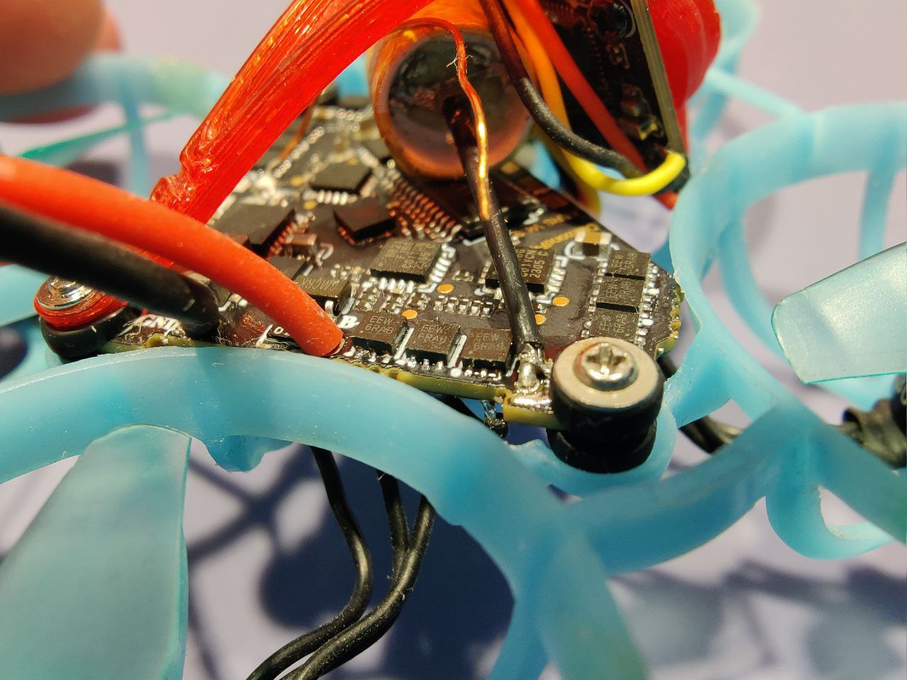
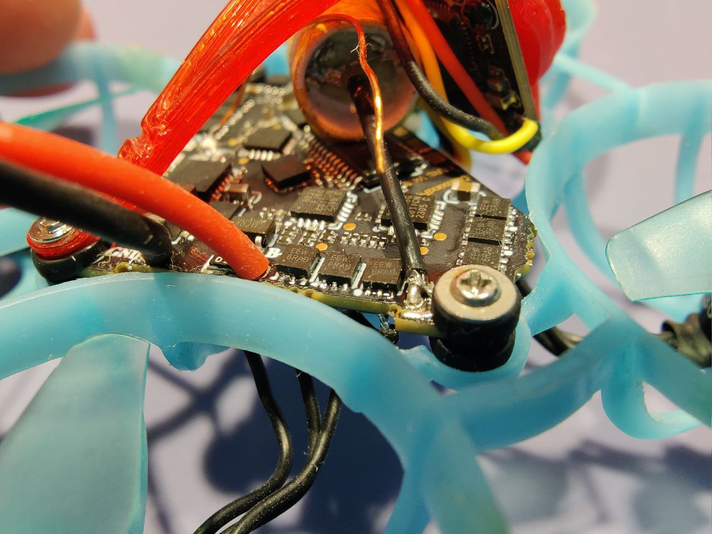

Замена подшипников на моторах 1002
Достались мне бушные мотры flywoo robo 1002 с уставшими подшибниками(люфт, хруст) и было принято решение их восстановить.
Для процесса понадобится:
- Съемник шестеренок с валов двигателей
- Вал 1.5мм
- Новые подшипики (2шт на мотор)
- Вата
Ввиду того, что посадочное место для подшипников не сквозное, невозможно выдавить их только с одной стороны. Для начала необходимо засунуть вату в пространство между подшипниками и ,вставив вал 1.5мм в экстрактор, выдавить противоположный подшипник относительно направлению выдавливания. После этого уже можно выдавить противоположный подшипник, перевернув мотор и воспользовавшись штатным штифтом из набора. Важно не прилагать больших усилий в момент когда упор идет на обмотку, лучше всего проложить нечно мягкое, чтобы не повредить саму обмотку. Подшипники стоят около 50центов за штуку и , при цене в 10 долларов за мотор, эту процедуру можно считать экономически целесообразной. Важно не сломать сам подшипник потому что внешнюю обойму отдельно очень тяжело вытаскивать.
При выборе съемника стоит предпочесть модели без резьбы на экстракторах(как на фото выше) в этом случае удастся жестко зафиксировать вал 1.5мм. Ссылки:

 
